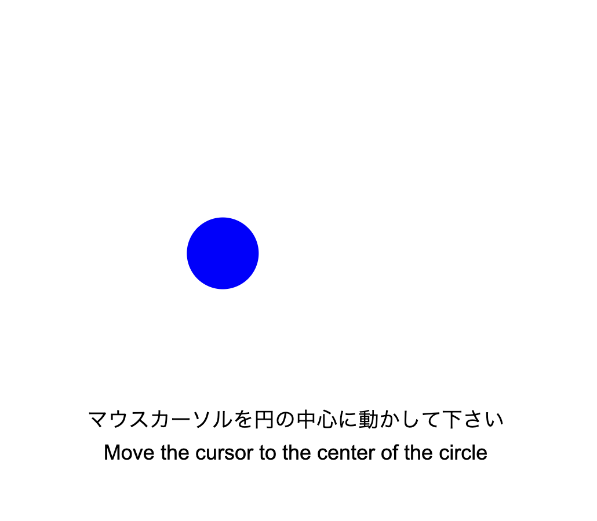

<html>
<head>
    <link rel="stylesheet" href="../lib/bootstrap-4.3.1-dist/css/bootstrap.min.css" />
</head>
<body>
<div class="container" >
    <div class="row">
        <div class="col-12 pt-3 pb-3" >
            <h1>
                Explanation of "Fitts's law experiment" <br />
                「フィッツの法則の実験」についての説明
            </h1>

            <ul  class="nav nav-tabs">
                <li class="nav-item"><a class="nav-link" href="#japanese" onclick="document.getElementById('japanese').style.display='block';document.getElementById('english').style.display='none';" >
                    日本語</a></li>
                <li class="nav-item"><a class="nav-link" href="#english"  onclick="document.getElementById('japanese').style.display='none';document.getElementById('english').style.display='block';"
                >English</a></li>
            </ul>
            <div id="japanese" class="text-left pt-3">
                <p>
                    画面上に、次々と、青か緑の円が表示されます。
                </p>
                <p>
                    これは表示される画面の例です。<br />
                    
                    <br />
                </p>
                <p>
                    円が表示されたら、できるだけ早く正確に円の中心にマウスカーソルを移動させてください。
                </p>
                <p>
                    円の中心に0.5秒間カーソルが置かれると、次の円が表示されるので、同じようにしてください。
                    
                </p>
                <p>
                    下のボタンを押すと、練習が始まります。
                </p>

              

            </div>
            <div id="english" style="display:none;" class="text-left pt-3">
                <p>
                    Blue or green circles are shown in the screen one after another.
                </p>
                <p>
                    This is an example of the screen<br />
                        
                        <br />
                    </p>
                <p>
                    If a circle is shown, move the mouse cursor to the center of the circle as fast as possible, but at the same time try to avoid errors.
                </p>
                <p>
                    When the cursor is placed at the center of the circle for 0.5 seconds, the next circle will be displayed, so do the same.
                </p>
                <p>
                    Press the button below to start the practice trial.
                </p>
               
            </div>
            <button type="button" id="next-button" class="btn btn-primary">Go to the practice trial/練習を始める</button>
        </div>
    </div>
</div>


<script src="../lib/bootstrap-4.3.1-dist/js/bootstrap.min.js"></script>
</body>
</html>